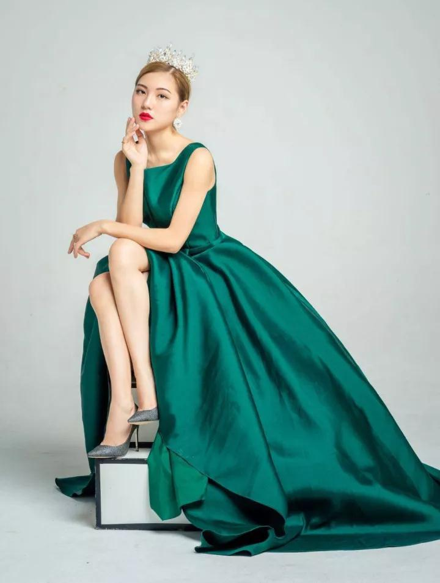

｜设计｜空间｜美学｜原创｜
中国美，遇见有品位的美学生活家。

优雅是什么？是一种教养，一种从容，一种自信，一种境界，一种长期心灵的积淀......
优雅是一种气质，即体现在一个人的外表着装和言行举止上，也贯穿于学识修养、为人处事等方面。优雅是一种完美的生活态度，低调不张扬，端庄不做作，让人心生敬意。
本期我们对Lina——2017环球世界小姐亚军,一个优雅的女子进行了专访，看看从她的经历中，能给我们怎样的启迪。
.jpg)
Lina
2017环球世界小姐亚军
2017世界网红偶像小姐英国形象大使
2016全球首届主播成员
2016世界和平小姐十佳
.jpg)
“巧笑倩兮，美目盼兮”，面对2017环球世界小姐亚军Lina，这样的形容再合适不过。不同于舞台上的沉稳自信，这次近距离的对话，让我们看到她天真烂漫、活泼灵动的另一面。
Lina给人的第一印象是自信、大方、爱笑。开朗的性格下，骨子里透着一股面对逆境坚持不放弃的认真劲儿。对自己要求严格的她，为了在舞台展示出最佳的状态，私下总是反复苦练，为了一个动作尽善尽美，练习到凌晨一两点钟也是家常便饭。
“人们只看到模特站在星光闪耀的舞台上光鲜亮丽的样子，却不知道这光鲜亮丽的背后也会有许多辛苦和汗水”。 俗话说‘台上一分钟台下十年功’，Lina为了让自己拥有独特的气质和完美的体态，并且掌握熟练的模特必备技能，就必须在台下严格要求自己，通过平时一点一滴的积累、实践发挥的经验和到各地参加活动比赛的见识经历，这样才会练就一身模特该有的综合素质，随着自己的成绩越来越好，就会发现之前付出的辛苦汗水都是非常值得的。
.jpg)
犹如Lina在台上踏出的步伐一样，她在生活里也是这样一位坚定、自信、无畏的女孩。也许你说岁月宠爱了她，而事实是她没有辜负了时光，她把想法化为现实，脚踏实地、付诸实践。优秀的人总是有迹可循的，作为年轻无极限的一代人，在浮躁的年代和环境下需要的是沉淀、需要的是坚持、需要的是敢想敢做。如Lina这般，但凡启程，必将竭尽所能。
Lina始终坚信天道酬勤，成功没有捷径，还是需要默默努力，好比参加比赛，同台竞技的都是非常优秀的女孩，怎么能在这些优秀的女孩中脱颖而出，就是自己得付出更多的努力，要选择厚积薄发，往往积累的时间越长，蜕变的时间就会越短，水滴石穿，厚积薄发。“很多时候得失都是相辅相成的，在我看来，首先需要的是顺其自然，顺其自然的把每一步都做到很好，到时候自然就会开始蜕变，“厚积”之后“薄发”的瞬间就会很顺利，也会得到之前想要的东西。”
.jpg)
关于对时尚和美的理解，Lina认为简单的就是时尚的，适合自己的才是美的，很多人为了赶当季元素，不断尝试一些不适合自己的事物，事实上应该扬长避短、不要盲从，应该追求最适合自己的美，探求“个人的时尚”。
“美对我来说不仅仅是外表，更应该注重的是内在的修养，言谈举止，话语间、举手投足之间，都会体现出个人修养。”Lina说她追求的是成为一个优雅的女子，而不仅仅是个美丽的女子。优雅和美丽不一样的，美丽是上帝赐予一个人天生的东西，而优雅是后天形成的，是经过长期的艺术熏陶，逐渐沉淀下来的气质和韵味，所以优雅给人直接的表现就是不以物喜，不以己悲，它会以宽容、大气的气质表现出来。
平时Lina会看看书，听听歌，跳跳舞，喜欢去旅游看看外面的世界，开拓自己的眼界。空闲时刻，约上几个知心朋友一聚，在柔美的灯光下，听着喜欢的曲子，谈论着、抒发着自己的情怀。或诗意盎然、或妙语连珠，或笑声不断，充满着幸福与喜悦，充满着轻松与享受，享受休闲的恣意时光。
.jpg)
结缘明昌生态，
成为“花间里”品牌形象大使
Lina与明昌生态结缘于2017环球世界小姐选秀比赛，比赛期间她用了明昌生态的赞助品牌——“花间里”护肤品，从而深深地被这个护肤品牌吸引住了，“我的皮肤是非常容易过敏的，花间里系列的护肤产品恰好具有改善肌肤过敏的功效，我用了觉得非常舒服......”所以她决定与明昌生态合作，成为明昌生态“花间里”品牌的形象大使，为“花间里”代言。
优雅源自内涵，自信始于磨炼，Lina不但展现出中国女性的自信和美丽，更彰显了其内外兼修的气质。这与”花间里”品牌的唯美优雅，从容宁静的气质不谋而合。未来她也将会把大部分精力投入到推广“花间里”品牌，让“花间里”走向全世界。
“时尚，优雅”是我对Lina的第一印象，随着聊天的深入，让我看到了一个自信女孩的光芒，不仅仅是外表呈现的美丽，那是一种来自内心无比强大的能量。而她的“坚持，有原则”更是让我欣赏。花若盛开，蝴蝶自来。祝愿这位优雅美丽的女孩能够在未来展翅高飞，放飞自己的梦想。